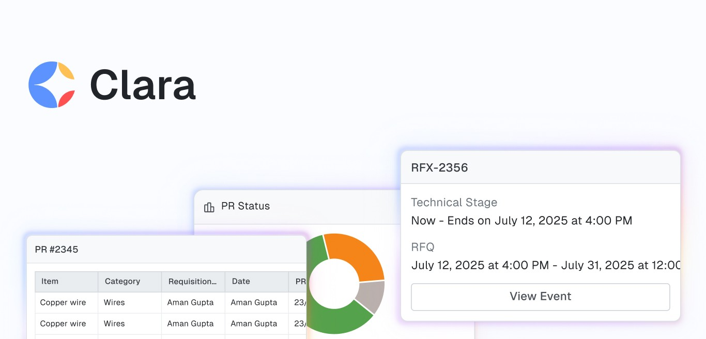

Procol · Aug 2024 — Present
Agentic source-to-pay platform
Procurement teams were spending their days on routine, repeatable steps. I designed an autonomous experience where agents take that work and buyers supervise it — plus the six core surfaces around it, from reverse auction to GST reconciliation.
Shipped 0 → 1 · 6 surfaces